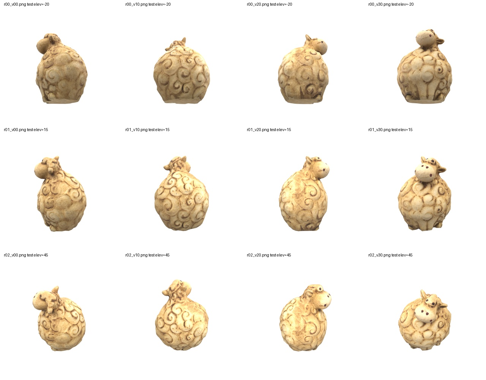
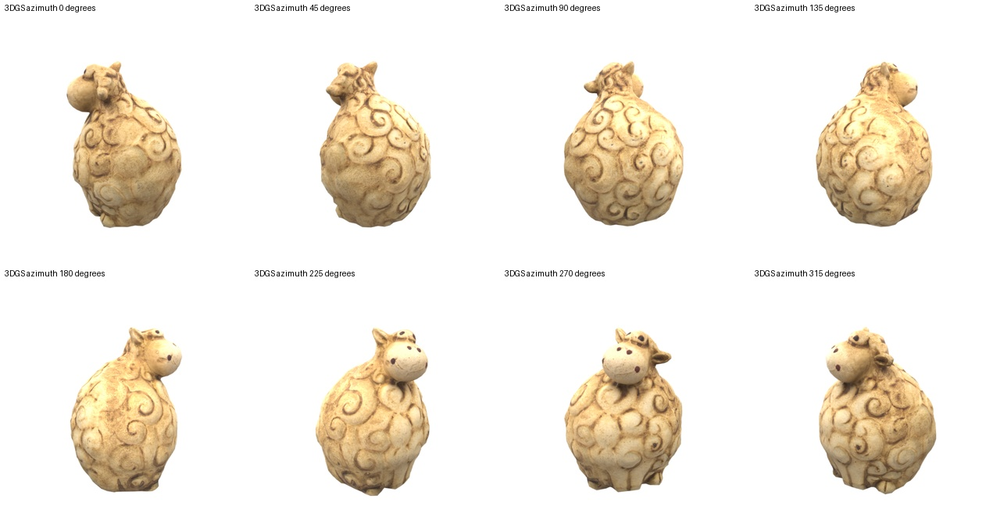
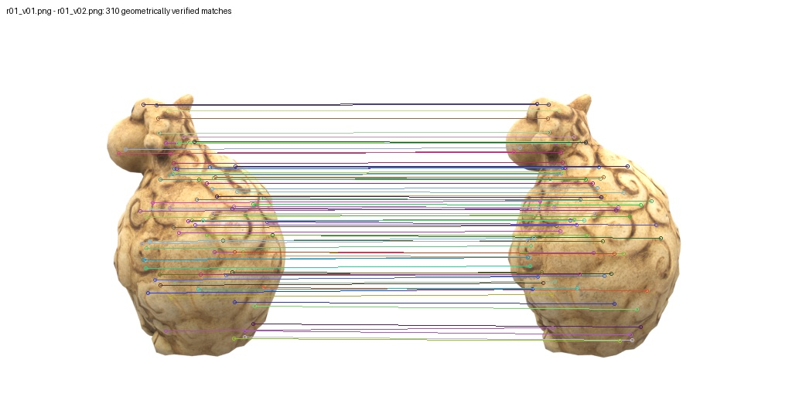
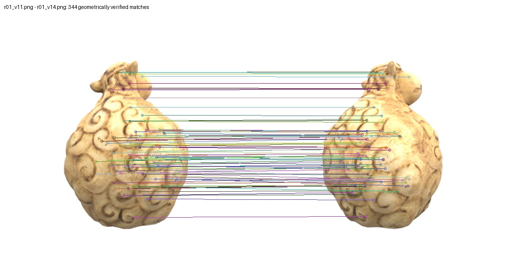
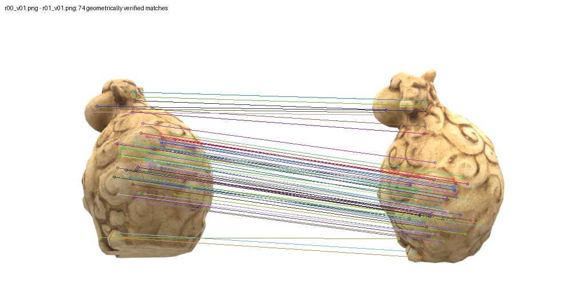
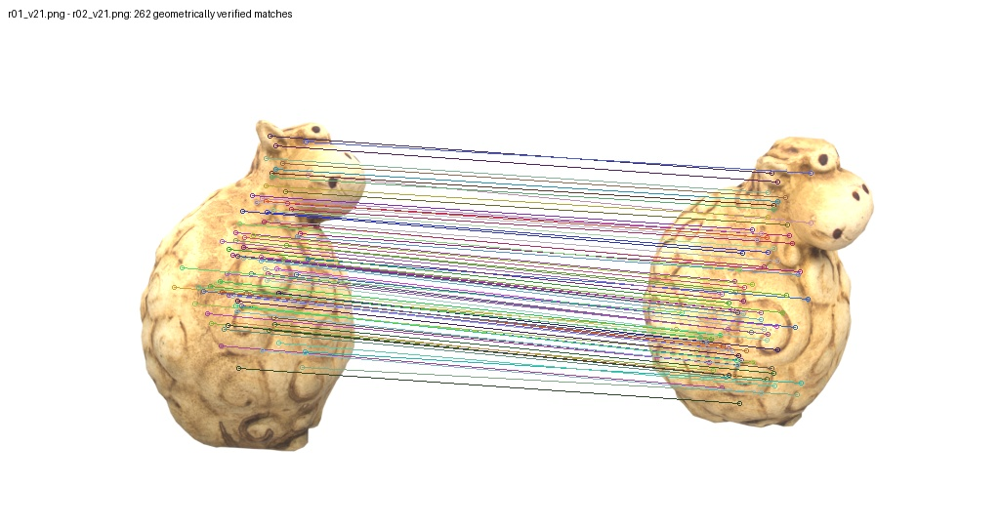

UID：97989d443ac048acb6bb42a2f82c6324 · SfM 初始化 → 官方 3DGS

96 张训练 / 24 张测试；相机注册 96/96；稀疏点 6,977；重投影误差 0.320 px。
30,000 步，60,362 个高斯；全图 PSNR 43.811 dB，SSIM 0.99538，前景 PSNR 37.944 dB。


每张图最多画 80 条线，标题和下表记录全部几何验证内点数量。
r01_v01.png ↔ r01_v02.png：310 个内点。

r01_v11.png ↔ r01_v14.png：344 个内点。

r00_v01.png ↔ r01_v01.png：74 个内点。

r01_v21.png ↔ r02_v21.png：262 个内点。

点击视角可查看真实图像、预测图像及放大的误差。
| 视角 | 前景 PSNR | 全图 PSNR | SSIM |
|---|---|---|---|
| r00_v00.png | 36.776 | 42.639 | 0.99346 |
| r00_v05.png | 35.662 | 41.679 | 0.99325 |
| r00_v10.png | 38.299 | 44.413 | 0.99529 |
| r00_v15.png | 38.300 | 44.383 | 0.99533 |
| r00_v20.png | 38.107 | 43.973 | 0.99501 |
| r00_v25.png | 37.266 | 42.754 | 0.99386 |
| r00_v30.png | 37.558 | 42.952 | 0.99381 |
| r00_v35.png | 36.586 | 42.146 | 0.99360 |
| r01_v00.png | 37.759 | 43.794 | 0.99495 |
| r01_v05.png | 38.092 | 44.003 | 0.99523 |
| r01_v10.png | 39.034 | 44.506 | 0.99611 |
| r01_v15.png | 37.747 | 43.373 | 0.99566 |
| r01_v20.png | 39.113 | 44.632 | 0.99593 |
| r01_v25.png | 37.508 | 43.095 | 0.99527 |
| r01_v30.png | 38.787 | 44.368 | 0.99558 |
| r01_v35.png | 37.351 | 43.169 | 0.99470 |
| r02_v00.png | 37.298 | 43.815 | 0.99630 |
| r02_v05.png | 38.115 | 44.454 | 0.99646 |
| r02_v10.png | 38.491 | 44.169 | 0.99632 |
| r02_v15.png | 38.909 | 44.579 | 0.99656 |
| r02_v20.png | 38.615 | 44.559 | 0.99657 |
| r02_v25.png | 38.953 | 45.102 | 0.99682 |
| r02_v30.png | 38.826 | 44.985 | 0.99674 |
| r02_v35.png | 37.505 | 43.932 | 0.99635 |
7,000 步前景 PSNR：36.321 dB。7k 对照图 · 30k 同视角对照图。
| 独立测试高度 | 视角数 | 前景 PSNR | 全图 PSNR | 示例 |
|---|---|---|---|---|
| 0° | 12 | 36.201 | 42.235 | 对照图 |
| 30° | 12 | 37.392 | 43.360 | 对照图 |
| 60° | 12 | 33.733 | 40.986 | 对照图 |
0°/30°位于训练高度之间，60°超过训练最高高度。所有测试图像未参与训练。逐视角指标
本页为可提交的紧凑结果。原始数据、SQLite 数据库、高斯 PLY、训练检查点和全部 PNG 保存在本地 outputs/ 对应目录。